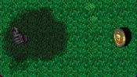

| RainCloud  |
|
|---|---|
| The RainCloud object is a hazard used in Area 7 - The Miniature Masterz. To place a RainCloud, put the logic on a Tile that is its starting WayPoint. Then, using the Rects.. fields, specify the X and Y tile coordinates for each successive WayPoint. Note: to find the tile coordinates of a particular Tile, go into Tile mode and click on a Tile; displayed in the bottom right of the screen will be the tile coordinates of the selected Tile. |
|
| Edit Objects Dialog Box | |
| Logic: | RainCloud |
| Image Set: | LEVEL_RAINCLOUD |
| Speed: | 0 (default) speed of the RainCloud in milliseconds. 600 in this field would cause the RainCloud to move at the average walking speed of a Grunt. 'Speed' is the amount of time it takes for an object to travel the distance of one Tile in any direction. |
| Damage: | 0 the time in milliseconds that the RainCloud stops and waits at each WayPoint. 1000 in this field would cause the RainCloud to stop for one second. |
| Click on the Rects.. button and fill in at least one pair of X,Y coordinates. | |
| Object Rectangles Dialog Box | |
| Click on the link to see the use of the Rects.. fieldz. | |